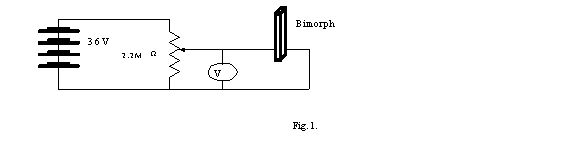
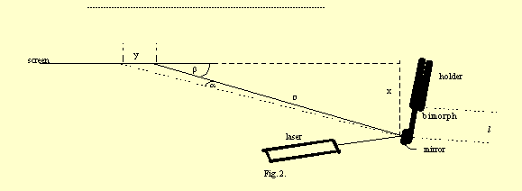
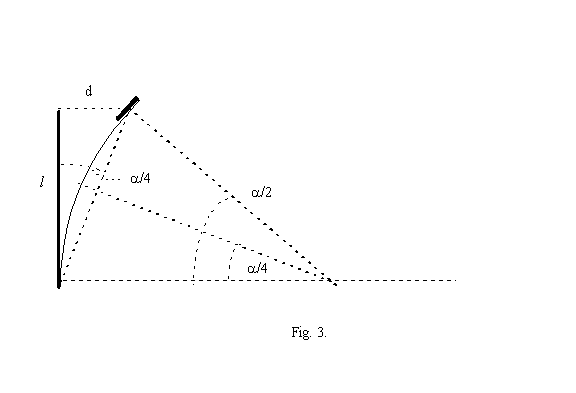
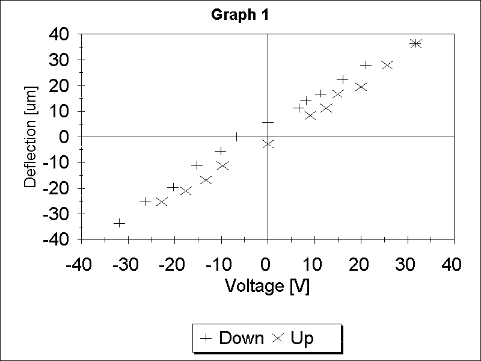
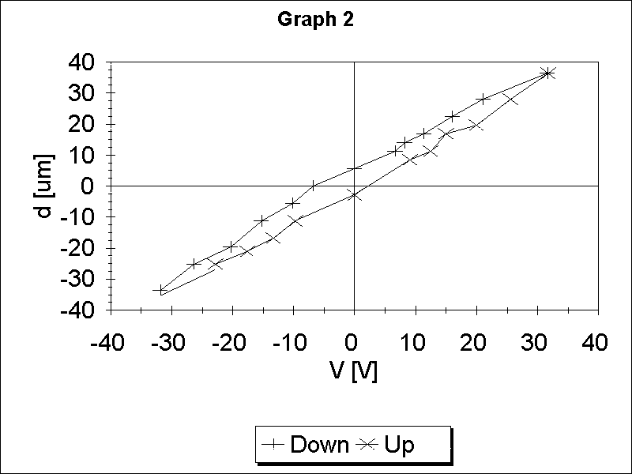
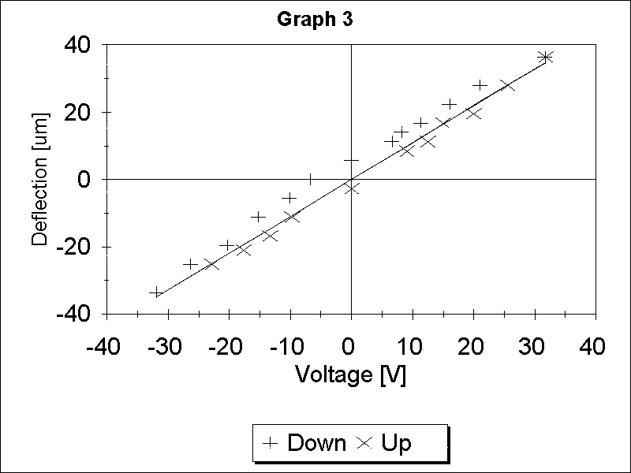
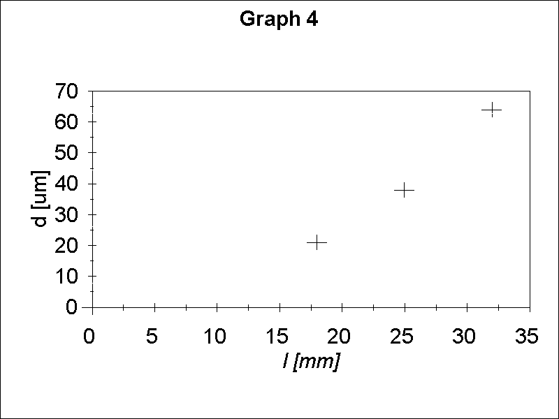
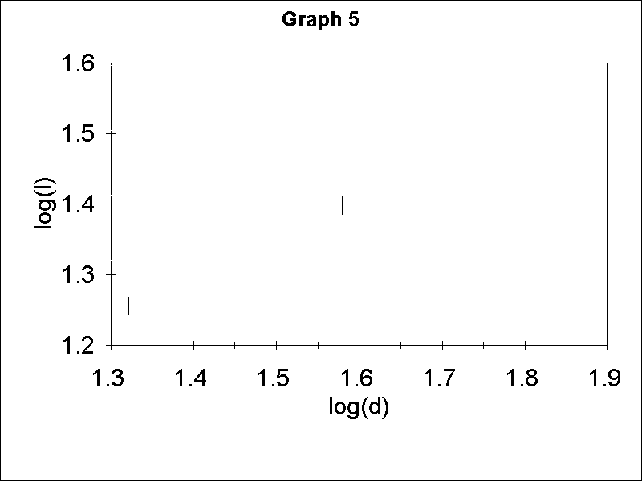
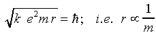
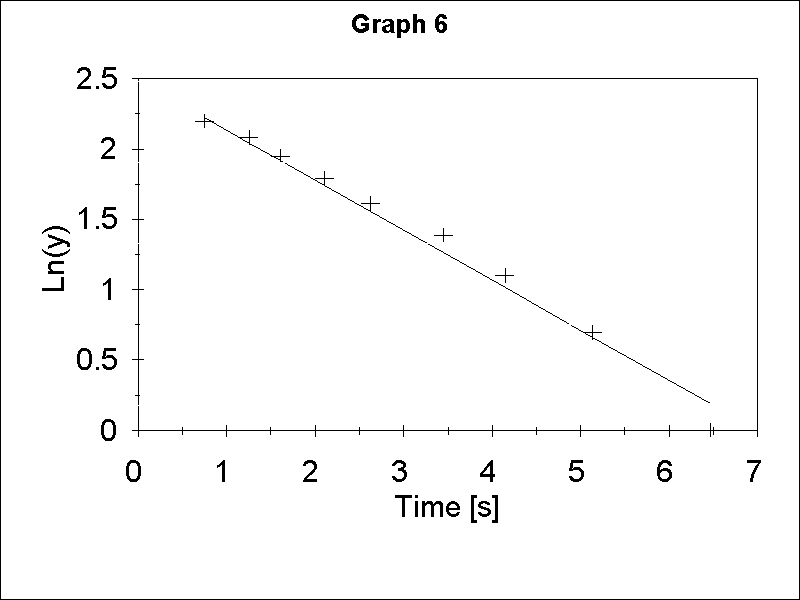

------------------------------------------------------------------------------------------------

1 point for any diagram which allows applying the full range of voltages.
-------------------------------------------------------------------------------------------------

D is the distance from the mirror to the spot on the screen. y is the distance the spot moves when voltage is applied, x is the shortest distance from the mirror to the screen.
1 point for any well-labeled arrangement allowing to perform the experiment with resonable sensitivity.
-------------------------------------------------------------------------------------------------
-------------------------------------------------------------------------------------------------
d = l yx/4D2
l is the length of the free part of the bimorph.
See Fig. 2. for x, y and D.
When the bimorph bends into an arc shape the mirror at the end is rotated by an angle /2. This results in a change of a direction of the reflected beam by an angle . The spot formed by the reflected beam on the screen moves by a distance y (see Fig. 2.). If the angle between the reflected beam and the screen is (<90 degrees to increase accuracy) the small angle by which the laser beam is deflected due to the movement of the bimorph is given by = y sin/D = yx/D2 (y<<D).
The angle of rotation of the mirror /2 is related to the deflection d of the free end of the bimorph by d = l sin /4 (see Fig. 3). For small we have
d = l yx/4D2

2 points (also for any other correct formula relating the displacement d to the measured quantities). 1 point for the formula with 1 error, 1/2 for the formula with two errors, 0 for the formula with more errors.
Total 2 points.
-------------------------------------------------------------------------------------------------
-------------------------------------------------------------------------------------------------
Graph 1

2 points for a correct graph.
-------------------------------------------------------------------------------------------------
-------------------------------------------------------------------------------------------------
The force moving the bimorph is proportional to the applied voltage V, the distance is proportional to the displacement d so the area under the plot of d versus V is proportional to the energy. Therefore the area inside the hysteresis curve is proportional to the energy dissipated in the bimorph.
1 point for identifying the area inside the hysteresis curve as proportional to the energy dissipated in the bimorph.
-------------------------------------------------------------------------------------------------
-------------------------------------------------------------------------------------------------
Graph 2 shows the data from Graph 1 with the hysteresis curve outlined. Area must be expressed in the units of x axis times units of y axis. The area estimated from Graph 2 is (350 +- 160) Vm.

If the quantity is correctly identified and the value consistent to within 50% with the student's data 1 point will be given.
No points will be allocated for the value if the units are not specified
1/2 point for a reasonable error estimate
Total 1.5 points.
-------------------------------------------------------------------------------------------------
-------------------------------------------------------------------------------------------------
m = 1
If hysteresis is ignored the data from the Graph 1 can be fitted with a straight line indicating that the displacement is proportional to voltage. See Graph 3.
1 point for showing that m = 1.

-------------------------------------------------------------------------------------------------
-------------------------------------------------------------------------------------------------
Graph 4 shows the dependence of the displacement of the end of the bimorph on the length of the bimorph for the same voltage change 72 V.

One can conclude from this graph that the displacement is not proportional to the length. One can then plot log d versus log l (see Graph 5) and calculate the slope which will give the value of n. From Graph 5 we obtain n = 1.89 +- 0.13. Notice that l should be measured from the center of the mirror to the edge of the holder.

1 point for demonstrating by correct measurements and graph and/or calculations that n is about 2 (between 1.7 and 2.3). 1/2 point for values between 1.5 to 1.7 or 2.3 to 2.5. 1/2 point for a reasonable error estimate, for example, from the range of possible slopes on the Graph 5.
Total 1.5 points.
-------------------------------------------------------------------------------------------------
-------------------------------------------------------------------------------------------------
Knowing l, m and n one can calculate A from the slope of the straight line on Graph 2.
A = (9 +- 1) 10-4 [1/Vm]
All the values between 7 and 11 will be given 2 points
All the values between 5 and 13 (but not in the region above) will be given 1 point
All the values between 2 and 16 (but not in the region above) will be given 1/2 point
1 point for a reasonable error estimate, for example, from the range of possible slopes on the Graph 3.
Total 3 points.
-------------------------------------------------------------------------------------------------
-------------------------------------------------------------------------------------------------

1 point for this or equivalent schematics utilizing 1G resistor in such a way that the time constant is of the order of seconds.
1/2 point for other arrangements that could measure the capacitance.
Total 1 point.
-------------------------------------------------------------------------------------------------
-------------------------------------------------------------------------------------------------
The 1G resistor and bimorph form an RC circuit. If we charge the capacitance of the bimorph to maximum voltage (V0 = 36V) and disconnect the battery the voltage will decay according to the formula V= V0 exp(-t/RC) where t is elapsed time. If the voltmeter with the input resistance of 1M is connected to the bimorph to measure the voltage directly, the time constant is too short to be measured. The deflection of the bimorph is proportional to the voltage so one can measure the decay time indirectly by observing the decay of the deflection after the bimorph was charged. To do so efficiently one can mark several points on the screen between deflection corresponding to the maximum voltage and 0 voltage and measure the time deflection decays to these points. The slope of the plot of logarithm of deflection versus time (Graph 6) or the equivalent calculations will give time constant and knowing R one can obtain C.

1 point for a correct formula for C.
1 point for using the time dependent displacement d as a measure of the time constant
1 point for correct data table and/or graph.
Total 3 points.
-------------------------------------------------------------------------------------------------
-------------------------------------------------------------------------------------------------
C = (5 +- 1) nF
All the values between 3 and 7 will be given 1.5 points
All the values between 1 and 9 (but not in the region above) will be given 1 point
All the values between 0.5 and 12 (but not in the region above) will be given 1/2 point
No points will be allocated for the value if the units are not specified
1/2 point for a reasonable error estimate.
Total 2 points.